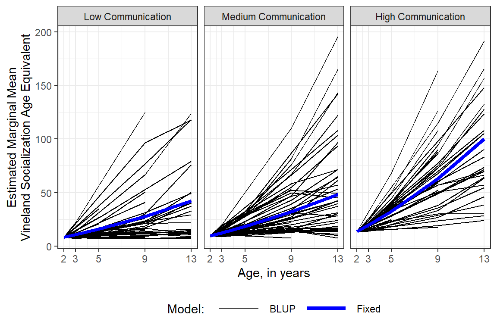
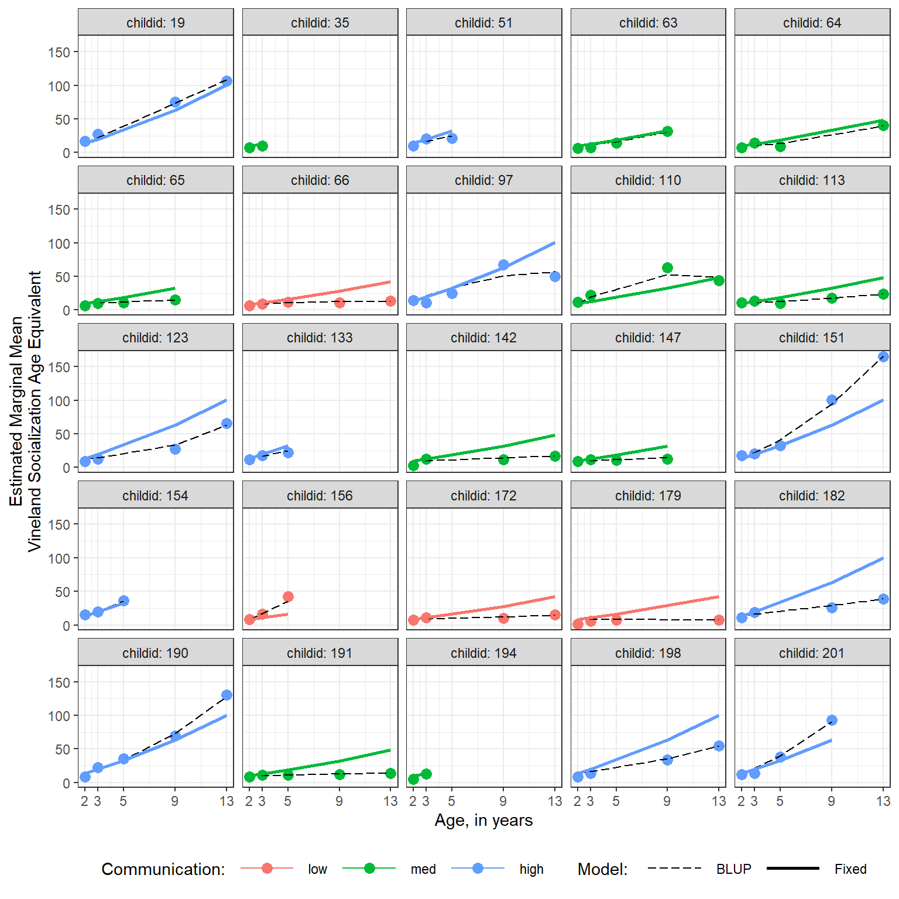
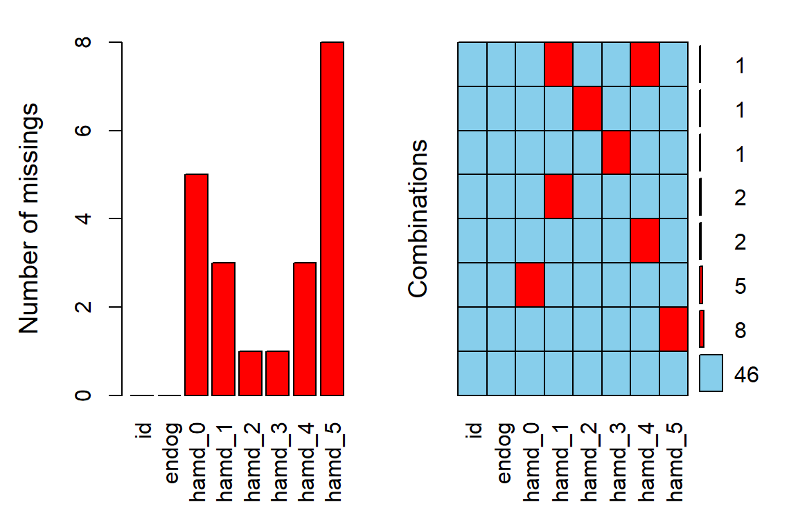
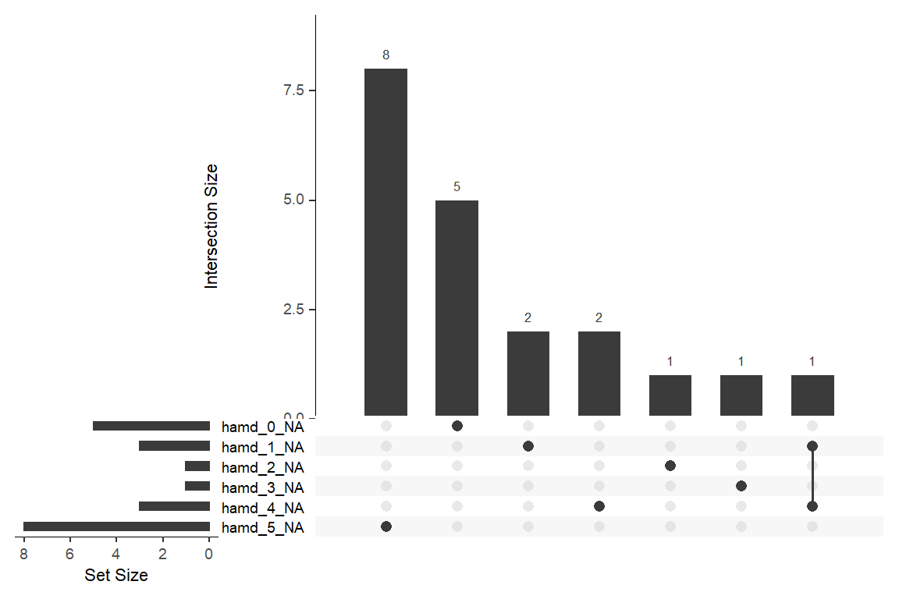
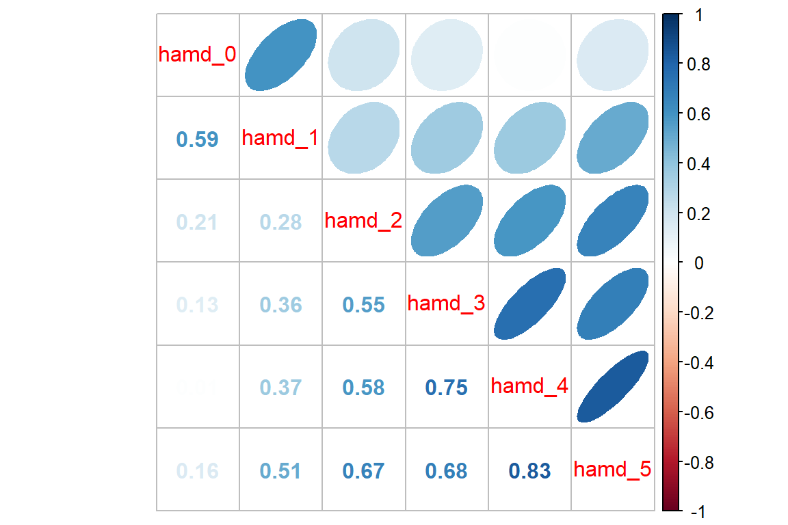

11 MLM, Longitudinal: Hedeker & Gibbons - Depression
library(tidyverse) # all things tidy
library(pander) # nice looking genderal tabulations
library(furniture) # nice table1() descriptives
library(texreg) # Convert Regression Output to LaTeX or HTML Tables
library(psych) # contains some useful functions, like headTail
library(sjstats) # ICC calculationsv
library(effects) # Estimated Marginal Means
library(VIM) # Visualization and Imputation of Missing Values
library(naniar) # Summaries and Visualisations for Missing Data
library(corrplot) # Vizualize correlation matrix
library(lme4) # Linear, generalized linear, & nonlinear mixed models
library(haven) # read in SPSS dataset11.1 Background
Starting in chapter 4, Hedeker and Gibbons (2006) details analysis of a psychiatric study described by Reisby et al. (1977). This study focues on the relationship between Imipramine (IMI) and Desipramine (DMI) plasma levels and clinical response in 66 depressed inpatients (37 endogenous and 29 non-endogenous). The IMI and DMI measures were only taken in the later weeks, but are not used here.
Dependent or outcome variable:
hamdHamilton Depression Scores (HD)
Independent or predictor variables:
endogPrepression Diagnosis- endogenous
- non-endogenous/reactive
- endogenous
- IMI (imipramine) drug-plasma levels (µg/l)
- antidepressant given 225 mg/day, weeks 3-6
- DMI (desipramine) drug-plasma levels (µg/l)
- metabolite of imipramine
data_raw <- haven::read_spss("http://www.uic.edu/~hedeker/riesby.sav") %>% # read from teh webpage
dplyr::select(-intrcpt, -endweek) # de-select or delete some variables id hamd week endog
1 101 26 0 0
2 101 22 1 0
3 101 18 2 0
4 101 7 3 0
5 101 4 4 0
6 101 3 5 0
7 103 33 0 0
8 103 24 1 0
9 103 15 2 0
10 103 24 3 0
11 103 15 4 0
12 ... ... ... ...
13 360 28 4 1
14 360 33 5 1
15 361 30 0 1
16 361 22 1 1
17 361 11 2 1
18 361 8 3 1
19 361 7 4 1
20 361 19 5 111.1.1 Long Format
data_long <- data_raw %>% # save the dataset as a new name
dplyr::filter(!is.na(hamd)) %>% # remove NA or missing scores
dplyr::mutate(id = factor(id)) %>% # declare grouping var a factor
dplyr::mutate(endog = factor(endog, # attach labels to a grouping variable
levels = c(0, 1), # order of the levels should match levels
labels = c("Reactive", # order matters!
"Endogenous"))) %>%
dplyr::select(id, week, endog, hamd) %>% # select the order of variables to include
dplyr::arrange(id, week) # sort observations id week endog hamd
1 101 0 Reactive 26
2 101 1 Reactive 22
3 101 2 Reactive 18
4 101 3 Reactive 7
5 101 4 Reactive 4
6 101 5 Reactive 3
7 103 0 Reactive 33
8 103 1 Reactive 24
9 103 2 Reactive 15
10 103 3 Reactive 24
11 103 4 Reactive 15
12 <NA> ... <NA> ...
13 609 2 Endogenous 22
14 609 3 Endogenous 14
15 609 4 Endogenous 15
16 609 5 Endogenous 2
17 610 0 Endogenous 34
18 610 2 Endogenous 33
19 610 3 Endogenous 23
20 610 5 Endogenous 1111.1.2 Wide Format
data_wide <- data_long %>% # save the dataset as a new name
tidyr::spread(key = week, # name the varaible that specifies how to spread
value = hamd, # name the variable to be spread out
sep = "_") # add to combine the key-variables name before its valueNotice the missing values, displayed as NA.
id endog week_0 week_1 week_2 week_3 week_4 week_5
1 101 Reactive 26 22 18 7 4 3
2 103 Reactive 33 24 15 24 15 13
3 104 Endogenous 29 22 18 13 19 0
4 105 Reactive 22 12 16 16 13 9
5 <NA> <NA> ... ... ... ... ... ...
6 607 Endogenous 30 39 30 27 20 4
7 608 Reactive 24 19 14 12 3 4
8 609 Endogenous <NA> 25 22 14 15 2
9 610 Endogenous 34 <NA> 33 23 <NA> 1111.2 Exploratory Data Analysis
11.2.1 Diagnosis Group
# Knit to Website: output = "html"
# Knit to PDF: output = "latex2"
# View on Screen: output = ""text", or "markdown", "html"
data_long %>%
dplyr::filter(week == 0) %>%
furniture::table1("Depression Type" = endog,
output = "html")| Mean/Count (SD/%) | |
|---|---|
| n = 61 | |
| Depression Type | |
| Reactive | 28 (45.9%) |
| Endogenous | 33 (54.1%) |
11.2.2 Missing Data & Attrition
Plot the amount of missing vlaues and the amount of each patter of missing values.

11.2.3 Depression Over Time, by Group
11.2.3.1 Table of Means
Default = COMPLETE CASES ONLY!!!
Note - the sample size at each time point is the same, but subjects are only included if they have data at every time point
# Knit to Website: output = "html"
# Knit to PDF: output = "latex2"
# View on Screen: output = ""text", or "markdown", "html"
data_wide %>%
furniture::table1(week_0, week_1, week_2,
week_3, week_4, week_5,
splitby = ~ endog,
test = TRUE,
na.rm = TRUE, # default: COMPLETE CASES ONLY!!!!!
output = "html") | Reactive | Endogenous | P-Value | |
|---|---|---|---|
| n = 25 | n = 21 | ||
| week_0 | 0.186 | ||
| 22.4 (3.9) | 24.1 (4.9) | ||
| week_1 | 0.007 | ||
| 20.1 (3.7) | 23.9 (5.5) | ||
| week_2 | 0.292 | ||
| 17.3 (4.3) | 19.0 (6.0) | ||
| week_3 | 0.398 | ||
| 15.9 (5.8) | 17.5 (6.9) | ||
| week_4 | 0.507 | ||
| 12.8 (6.7) | 14.2 (7.0) | ||
| week_5 | 0.468 | ||
| 11.4 (6.5) | 13.0 (8.7) |
Specify All data:
note - that the smaple sizes will be different for each time point
# Knit to Website: output = "html"
# Knit to PDF: output = "latex2"
# View on Screen: output = ""text", or "markdown", "html"
data_wide %>%
furniture::table1(week_0, week_1, week_2,
week_3, week_4, week_5,
splitby = ~ endog,
test = TRUE,
na.rm = FALSE, # INCLUDES ALL DATA !!!!
output = "html") | Reactive | Endogenous | P-Value | |
|---|---|---|---|
| n = 29 | n = 37 | ||
| week_0 | 0.301 | ||
| 22.8 (4.1) | 24.0 (4.8) | ||
| week_1 | 0.033 | ||
| 20.5 (3.8) | 23.0 (5.1) | ||
| week_2 | 0.095 | ||
| 17.0 (4.3) | 19.3 (6.1) | ||
| week_3 | 0.23 | ||
| 15.3 (6.2) | 17.3 (6.6) | ||
| week_4 | 0.298 | ||
| 12.6 (6.7) | 14.5 (7.2) | ||
| week_5 | 0.48 | ||
| 11.2 (6.3) | 12.6 (8.0) |
11.2.3.2 Using the LONG formatted dataset
Each person’s data is stored on multiple lines, one for each time point.
FOR ALL DATA!
data_sum_all <- data_long %>%
dplyr::group_by(endog, week) %>% # specify the groups
dplyr::summarise(hamd_n = n(), # count of valid scores
hamd_mean = mean(hamd), # mean score
hamd_sd = sd(hamd), # standard deviation of scores
hamd_sem = hamd_sd / sqrt(hamd_n)) # stadard error for the mean of scores
data_sum_all# A tibble: 12 x 6
# Groups: endog [2]
endog week hamd_n hamd_mean hamd_sd hamd_sem
<fct> <dbl> <int> <dbl> <dbl> <dbl>
1 Reactive 0 28 22.8 4.12 0.779
2 Reactive 1 29 20.5 3.83 0.712
3 Reactive 2 28 17 4.35 0.821
4 Reactive 3 29 15.3 6.17 1.15
5 Reactive 4 29 12.6 6.72 1.25
6 Reactive 5 27 11.2 6.34 1.22
7 Endogenous 0 33 24 4.85 0.844
8 Endogenous 1 34 23 5.10 0.874
9 Endogenous 2 37 19.3 6.08 1.00
10 Endogenous 3 36 17.3 6.56 1.09
11 Endogenous 4 34 14.5 7.17 1.23
12 Endogenous 5 31 12.6 7.96 1.43 FOR COMPLETE CASES ONLY!!!
data_sum_cc <- data_long %>%
dplyr::group_by(id) %>% # group-by participant
dplyr::mutate(person_vsae_n = n()) %>% # count the number of valid VSAE scores
dplyr::filter(person_vsae_n == 6) %>% # restrict to only thoes children with 5 valid scores
dplyr::group_by(endog, week) %>% # specify the groups
dplyr::summarise(hamd_n = n(), # count of valid scores
hamd_mean = mean(hamd), # mean score
hamd_sd = sd(hamd), # standard deviation of scores
hamd_sem = hamd_sd / sqrt(hamd_n)) # stadard error for the mean of scores
data_sum_cc# A tibble: 12 x 6
# Groups: endog [2]
endog week hamd_n hamd_mean hamd_sd hamd_sem
<fct> <dbl> <int> <dbl> <dbl> <dbl>
1 Reactive 0 25 22.4 3.90 0.781
2 Reactive 1 25 20.1 3.68 0.737
3 Reactive 2 25 17.3 4.34 0.867
4 Reactive 3 25 15.9 5.84 1.17
5 Reactive 4 25 12.8 6.68 1.34
6 Reactive 5 25 11.4 6.54 1.31
7 Endogenous 0 21 24.1 4.87 1.06
8 Endogenous 1 21 23.9 5.47 1.19
9 Endogenous 2 21 19.0 6.01 1.31
10 Endogenous 3 21 17.5 6.86 1.50
11 Endogenous 4 21 14.2 6.98 1.52
12 Endogenous 5 21 13.0 8.73 1.90 11.2.3.3 Person-Profile Plot or Spaghetti Plot
Use the data in LONG format.
A scatterplot of all observations of depression scores over time, joining the dots of each individual’s data.
NOTE: Not all lines have a point for every week!
data_long %>%
ggplot(aes(x = week,
y = hamd)) +
geom_point() +
geom_line(aes(group = id)) # join points that belong to the same "id"
data_long %>%
ggplot(aes(x = week,
y = hamd,
color = endog)) + # color points and lines by the "endog" variable
geom_point() +
geom_line(aes(group = id))
data_long %>%
ggplot(aes(x = week,
y = hamd)) +
geom_point() +
geom_line(aes(group = id)) +
facet_grid( ~ endog) # side-by-side pandels by the "endog" variable
data_long %>%
ggplot(aes(x = week %>% factor(),
y = hamd)) +
geom_boxplot() + # compare center and spread
facet_grid( ~ endog) 
data_long %>%
ggplot(aes(x = week %>% factor(),
y = hamd)) +
geom_violin() + # similar to boxplots to show distribution
facet_grid( ~ endog) 
data_long %>%
ggplot(aes(x = week,
y = hamd)) +
geom_point() +
geom_line(aes(group = id)) +
facet_grid( ~ endog) +
geom_smooth() + # DEFAULTS: method = "loess", se = TRUE, color = "blue"
geom_smooth(method = "lm",
se = FALSE,
color = "hot pink")
data_long %>%
ggplot(aes(x = week,
y = hamd)) +
geom_point() +
geom_line(aes(group = id)) +
facet_grid( ~ endog) +
geom_smooth(aes(color = "Flexible"),
method = "loess",
se = FALSE,) +
geom_smooth(aes(color = "Linear"),
method = "lm",
se = FALSE) +
scale_color_manual(name = "Smoother Type: ",
values = c("Flexible" = "blue",
"Linear" = "red")) +
theme_bw() +
theme(legend.position = "bottom")
11.3 Patterns in the Outcome Over Time
11.3.1 Variance-Covariance
11.3.1.1 Full Matrix
- Variances are down the diagonal
- Increasing variance over time violates the ANOVA assumption of homogeity of variance
data_wide %>%
dplyr::select(starts_with("week_")) %>% # just the outcome(s)
cov(use = "complete.obs") %>% # covariance matrix, LIST-wise deletion
round(3) week_0 week_1 week_2 week_3 week_4 week_5
week_0 19.421 10.716 9.523 12.350 9.062 7.376
week_1 10.716 24.236 12.545 15.930 11.592 8.471
week_2 9.523 12.545 26.773 23.848 23.858 20.657
week_3 12.350 15.930 23.848 39.755 33.316 29.728
week_4 9.062 11.592 23.858 33.316 45.943 37.107
week_5 7.376 8.471 20.657 29.728 37.107 57.332data_wide %>%
dplyr::select(starts_with("week_")) %>% # just the outcome(s)
cov(use = "pairwise.complete.obs") %>% # covariance matrix, PAIR-wise deletion
round(3) week_0 week_1 week_2 week_3 week_4 week_5
week_0 20.551 10.115 10.139 10.086 7.191 6.278
week_1 10.115 22.071 12.277 12.550 10.264 7.720
week_2 10.139 12.277 30.091 25.126 24.626 18.384
week_3 10.086 12.550 25.126 41.153 37.339 23.992
week_4 7.191 10.264 24.626 37.339 48.594 30.513
week_5 6.278 7.720 18.384 23.992 30.513 52.12011.3.1.2 Just Variances
Notice the variance in scores increases over time, which is seen in the side-by-side boxplots.
data_wide %>%
dplyr::select(starts_with("week_")) %>% # just the outcome(s)
cov(use = "pairwise.complete.obs") %>% # covariance matrix, PAIR-wise deletion
diag() # extracts just the variances week_0 week_1 week_2 week_3 week_4 week_5
20.55082 22.07117 30.09135 41.15288 48.59447 52.12008 11.3.2 Correlation
11.3.2.1 Full Matrix
Pairwise relationships are easier to eye-ball magnitude when presented as correlations, rather than covariances, due to the relative scale.
data_wide %>%
dplyr::select(starts_with("week_")) %>% # just the outcome(s)
cor(use = "complete.obs") %>% # correlation matrix - LIST-wise deletion
round(2) week_0 week_1 week_2 week_3 week_4 week_5
week_0 1.00 0.49 0.42 0.44 0.30 0.22
week_1 0.49 1.00 0.49 0.51 0.35 0.23
week_2 0.42 0.49 1.00 0.73 0.68 0.53
week_3 0.44 0.51 0.73 1.00 0.78 0.62
week_4 0.30 0.35 0.68 0.78 1.00 0.72
week_5 0.22 0.23 0.53 0.62 0.72 1.00data_wide %>%
dplyr::select(starts_with("week_")) %>% # just the outcome(s)
cor(use = "pairwise.complete.obs") %>% # correlation matrix - PAIR-wise deletion
round(2) week_0 week_1 week_2 week_3 week_4 week_5
week_0 1.00 0.49 0.41 0.33 0.23 0.18
week_1 0.49 1.00 0.49 0.41 0.31 0.22
week_2 0.41 0.49 1.00 0.74 0.67 0.46
week_3 0.33 0.41 0.74 1.00 0.82 0.57
week_4 0.23 0.31 0.67 0.82 1.00 0.65
week_5 0.18 0.22 0.46 0.57 0.65 1.0011.3.2.2 Visualization
Looking for patterns is always easier with a plot. All RM or mixed ANOVA assume sphericity or compound symmetry, meaning that all the correlations in the matrix would be the same. This is not the case for these data. Instead we see a classic pattern of corralary decay. Measures taken close in time, say 1 week apart, exhibit the highest degree of correlation. The farther apart in time that two measures are taken, the less correlated they are. Note that the adjacent measures become more highly correlated, too. This can be due to attrition; later time points having a smaller sample size.
data_wide %>%
dplyr::select(starts_with("week_")) %>% # just the outcome(s)
cor(use = "pairwise.complete.obs") %>% # correlation matrix
corrplot::corrplot.mixed(upper = "ellipse")
11.3.3 For Each Group
It can be a good ideal to investigate if the groups exhibit a similar pattern in correlation.
Reactive Depression
data_wide %>%
dplyr::filter(endog == "Reactive") %>% # filter observations for the REACTIVE group
dplyr::select(starts_with("week_")) %>%
cor(use = "pairwise.complete.obs") %>%
corrplot::corrplot.mixed(upper = "ellipse")
Endogenous Depression
data_wide %>%
dplyr::filter(endog == "Endogenous") %>% # filter observations for the Endogenous group
dplyr::select(starts_with("week_")) %>%
cor(use = "pairwise.complete.obs") %>%
corrplot::corrplot.mixed(upper = "ellipse")
11.4 MLM - Null or Emptly Models
11.4.1 Fit the model
Random Intercepts, with Fixed Intercept and Time Slope (i.e. Trend)….@hedeker2006 section 4.3.5, starting on page 55
Since this situation deals with longitudinal data, it is more appropriate to start off including the time variable in the null model as a fixed effect only.
11.4.2 Table of Parameter Estimates
# Knit to Website: texreg::htmlreg()
# Knit to PDF: texreg::texreg()
# View on Screen: texreg::screenreg()
texreg::htmlreg(fit_lmer_week_RI_reml,
single.row = TRUE,
caption = "MLM: Random Intercepts Null Model fit w/REML",
caption.above = TRUE,
custom.note = "Reproduction of Hedeker's table 4.3 on page 55, except using REML here instead of ML")| Model 1 | |
|---|---|
| (Intercept) | 23.55 (0.64)*** |
| week | -2.38 (0.14)*** |
| AIC | 2294.73 |
| BIC | 2310.43 |
| Log Likelihood | -1143.36 |
| Num. obs. | 375 |
| Num. groups: id | 66 |
| Var: id (Intercept) | 16.45 |
| Var: Residual | 19.10 |
| Reproduction of Hedeker’s table 4.3 on page 55, except using REML here instead of ML | |
On average, patients start off with HDRS scores of 23.55 and then change by -2.38 points each week. This weekly improvement of about 2 points a week is statistically significant via the Wald test.
11.4.3 Estimated Marginal Means Plot
Multilevel model on page 55 (Hedeker and Gibbons 2006)
\[ \hat{y} = 23.552 + -2.376 week \]
The fastest way to plot a model is to use the sjPlot::plot_model() function.

11.4.4 Estimated Marginal Means and Emperical Bayes Plots
With a bit more code we can plot not only the marginal model (fixed effects only), but add the Best Linear Unbiased Predictions (BLUPs) or person-specific specific models (both fixed and random effects).
data_long %>%
dplyr::mutate(pred_fixed = predict(fit_lmer_week_RI_reml, re.form = NA)) %>% # fixed effects only
dplyr::mutate(pred_wrand = predict(fit_lmer_week_RI_reml)) %>% # fixed and random effects together
ggplot(aes(x = week,
y = hamd,
group = id)) +
geom_line(aes(y = pred_wrand,
color = "BLUP",
size = "BLUP",
linetype = "BLUP")) +
geom_line(aes(y = pred_fixed,
color = "Marginal",
size = "Marginal",
linetype = "Marginal")) +
theme_bw() +
scale_color_manual(name = "Type of Prediction",
values = c("BLUP" = "gray50",
"Marginal" = "blue")) +
scale_size_manual(name = "Type of Prediction",
values = c("BLUP" = .5,
"Marginal" = 1.25)) +
scale_linetype_manual(name = "Type of Prediction",
values = c("BLUP" = "longdash",
"Marginal" = "solid")) +
theme(legend.position = c(0, 0),
legend.justification = c(-0.1, -0.1),
legend.background = element_rect(color = "black"),
legend.key.width = unit(1.5, "cm")) +
labs(x = "Weeks Since Baseline",
y = "Hamilton Depression Scores")
Notice that in this model, all the BLUPs are parallel. That is becuase we are only letting the intercept vary from person-to-person while keeping the effect of time (slope) constant.
Reproduce Table 4.4 on page 55 (Hedeker and Gibbons 2006)
One way to judge a model is to compare the estimated means to the observed means to see how accuratedly they are represented by the model. This excellent fit of the estimated marginal means to the observed data supports the hypothesis that the change in depression across time is LINEAR.
obs <- data_long %>%
dplyr::group_by(week) %>%
dplyr::summarise(observed = mean(hamd, na.rm = TRUE))
effects::Effect(focal.predictors = "week",
mod = fit_lmer_week_RI_reml,
xlevels = list(week = 0:5)) %>%
data.frame() %>%
dplyr::rename(estimated = fit) %>%
dplyr::left_join(obs, by = "week") %>%
dplyr::select(week, observed, estimated) %>%
dplyr::mutate(diff = observed - estimated) %>%
pander::pander(caption = "Observed and Estimated Means")| week | observed | estimated | diff |
|---|---|---|---|
| 0 | 23 | 24 | -0.11 |
| 1 | 22 | 21 | 0.67 |
| 2 | 18 | 19 | -0.49 |
| 3 | 16 | 16 | -0.01 |
| 4 | 14 | 14 | -0.43 |
| 5 | 12 | 12 | 0.27 |
11.4.5 Intra-individual Correlation (ICC)
# Intraclass Correlation Coefficient
Adjusted ICC: 0.463
Conditional ICC: 0.319Interpretation Nearly HALF of the variance in depression scores not explained by the linear effect of time is attributable to person-to-person differences. Thus, subjects display considerable heterogeneity in depression levels.
This value of 46% is an oversimplification of the correlation matrix above.
11.4.6 Compare to the Single-Level Null: No Random Effects
Simple Linear Regression, Hedeker and Gibbons (2006)
To compare, fit the single level regression model
11.4.6.1 Table of Parameter Estimates
# Knit to Website: texreg::htmlreg()
# Knit to PDF: texreg::texreg()
# View on Screen: texreg::screenreg()
texreg::htmlreg(list(fit_lm_week_ml, fit_lmer_week_RI_reml),
custom.model.names = c("Single-Level", "Multilevel"),
caption = "MLM: Longitudinal Null Models",
caption.above = TRUE,
custom.note = "The singel-level model treats are observations as being independent and unrelated to each other, even if they were made on the same person.")| Single-Level | Multilevel | |
|---|---|---|
| (Intercept) | 23.60*** | 23.55*** |
| (0.55) | (0.64) | |
| week | -2.41*** | -2.38*** |
| (0.18) | (0.14) | |
| R2 | 0.32 | |
| Adj. R2 | 0.32 | |
| Num. obs. | 375 | 375 |
| AIC | 2294.73 | |
| BIC | 2310.43 | |
| Log Likelihood | -1143.36 | |
| Num. groups: id | 66 | |
| Var: id (Intercept) | 16.45 | |
| Var: Residual | 19.10 | |
| The singel-level model treats are observations as being independent and unrelated to each other, even if they were made on the same person. | ||
For the multilevel model, the Wald tests indicated the fixed intercept is significant (no surprized that the depressions scores are not zero at baseline). More of note is the significance of the fixed effect of time. This signifies that depression scores are declining over time. On average, patients are improving across time, by an average of 2.4 points a week.
11.4.6.2 Residual Variance
Note: the fixed estimates are very similar for the two models, but the standard errors are different. Additionally, whereas the single-level regression lumps all remaining variance together (\(\sigma^2\)), the multilevel model seperates it into within-subjects (\(\sigma^2_{u0}\) or \(\tau_{00}\)) and between-subjects variance (\(\sigma^2_{e}\) or \(\sigma^2\)).
[1] 35.3997lme4::VarCorr(fit_lmer_week_RI_reml) %>% # in longitudinal data, a group of observations = a participant or person
print(comp = c("Variance", "Std.Dev")) Groups Name Variance Std.Dev.
id (Intercept) 16.446 4.0554
Residual 19.099 4.3703 “One statistician’s error term is another’s career!”
Hedeker and Gibbons (2006), page 56
11.5 MLM: Add Random Slope for Time (i.e. Trend)
11.5.1 Fit the Model
11.5.2 Table of Prameter Estimates
# Knit to Website: texreg::htmlreg()
# Knit to PDF: texreg::texreg()
# View on Screen: texreg::screenreg()
texreg::htmlreg(list(fit_lmer_week_RI_reml,
fit_lmer_week_RIAS_reml),
custom.model.names = c("Random Intercepts",
" And Random Slopes"),
caption = "MLM: Null models fit w/REML",
caption.above = TRUE,
custom.note = "Hedeker table 4.4 on page 55 and table 4.5 on page 58, except using REML here instead of ML")| Random Intercepts | And Random Slopes | |
|---|---|---|
| (Intercept) | 23.55*** | 23.58*** |
| (0.64) | (0.55) | |
| week | -2.38*** | -2.38*** |
| (0.14) | (0.21) | |
| AIC | 2294.73 | 2231.92 |
| BIC | 2310.43 | 2255.48 |
| Log Likelihood | -1143.36 | -1109.96 |
| Num. obs. | 375 | 375 |
| Num. groups: id | 66 | 66 |
| Var: id (Intercept) | 16.45 | 12.94 |
| Var: Residual | 19.10 | 12.21 |
| Var: id week | 2.13 | |
| Cov: id (Intercept) week | -1.48 | |
| Hedeker table 4.4 on page 55 and table 4.5 on page 58, except using REML here instead of ML | ||
Visually, we can see that the unexplained or residual variance is less (12.21 vs 19.10) for the model that includes person-specific slopes (trajectories over time).
Note: the negative covariance between random intercepts and random slopes (\(\sigma_{u01} = \tau_{01} = -1.48\)):
“This suggests that patients who are initially more depressed (i.e. greater intercepts) improve at a greater rate (i.e. more pronounced negative slopes). An alternative explainatio, though,is that of a floor effect due to the HDRS rating scale. Simply put, patients with less depressed intitial scores have a more limited range of lower scores than those with higher initial scores.”
Hedeker and Gibbons (2006), page 58
11.5.3 Likelihood Ratio Test
anova(fit_lmer_week_RI_reml, fit_lmer_week_RIAS_reml,
model.names = c("RI", "RIAS"),
refit = FALSE) %>%
pander::pander(caption = "LRT: Assess Significance of Random Slopes")| npar | AIC | BIC | logLik | deviance | Chisq | Df | Pr(>Chisq) | |
|---|---|---|---|---|---|---|---|---|
| RI | 4 | 2295 | 2310 | -1143 | 2287 | NA | NA | NA |
| RIAS | 6 | 2232 | 2255 | -1110 | 2220 | 67 | 2 | 0 |
Including the random slope for time significantly improved the model fit via the formal Likelihood Ratio Test. This rejects the assumption of compound symmetry.
11.5.4 Estimated Marginal Means Plot
Adding the random slopes didn’t change the estimates for the fixed effects much.
11.5.5 Estimated Marginal Means and Emperical Bayes Plots
data_long %>%
dplyr::mutate(pred_fixed = predict(fit_lmer_week_RIAS_reml, re.form = NA)) %>% # fixed effects only
dplyr::mutate(pred_wrand = predict(fit_lmer_week_RIAS_reml)) %>% # fixed and random effects together
ggplot(aes(x = week,
y = hamd,
group = id)) +
geom_line(aes(y = pred_wrand,
color = "BLUP",
size = "BLUP",
linetype = "BLUP")) +
geom_line(aes(y = pred_fixed,
color = "Marginal",
size = "Marginal",
linetype = "Marginal")) +
theme_bw() +
scale_color_manual(name = "Type of Prediction",
values = c("BLUP" = "gray50",
"Marginal" = "blue")) +
scale_size_manual(name = "Type of Prediction",
values = c("BLUP" = .5,
"Marginal" = 1.25)) +
scale_linetype_manual(name = "Type of Prediction",
values = c("BLUP" = "longdash",
"Marginal" = "solid")) +
theme(legend.position = c(0, 0),
legend.justification = c(-0.1, -0.1),
legend.background = element_rect(color = "black"),
legend.key.width = unit(1.5, "cm")) +
labs(x = "Weeks Since Baseline",
y = "Hamilton Depression Scores")
BLUPs are also refered to as Empirical Bayes Estimates and may be extracted from a model fit. In this cases there will be a specific intercept ((Intercept)) and time slope (week) for each individual or person (id).
11.5.5.1 Fixed Effects
Marginal Model = within-subject effects
(Intercept) week
23.577044 -2.377047 11.5.5.2 Random Effects
between-subjects effects
(Intercept) week
101 1.0572022 -2.1151378
103 3.6707900 -0.4832479
104 2.6727551 -1.5008819
105 -3.0413391 0.2264496
106 0.3154240 1.0254750
107 -0.6148994 -0.429738511.5.5.3 BLUPs or Empirical Bayes Estimates
fixed effects + random effects
(Intercept) week
101 24.63425 -4.492185
103 27.24783 -2.860295
104 26.24980 -3.877929
105 20.53571 -2.150598
106 23.89247 -1.351572
107 22.96214 -2.806786We can create a scatterplot of these to see the correlation between them.
coef(fit_lmer_week_RIAS_reml)$id %>%
ggplot(aes(x = week,
y = `(Intercept)`)) +
geom_point() +
geom_hline(yintercept = fixef(fit_lmer_week_RIAS_reml)["(Intercept)"],
linetype = "dashed") +
geom_vline(xintercept = fixef(fit_lmer_week_RIAS_reml)["week"],
linetype = "dashed") +
geom_smooth(method = "lm") +
labs(title = "Hedeker's Figure 4.4 on page 59",
subtitle = "Reisby data: Estimated random effects",
x = "Week Change in Depression",
y = "Baseline Depression Level") 
11.6 MLM: Coding of Time
So far we have used the variable week to denote time as weeks since baseline = week \(\in 0, 1, 2, 3, 4, 5\)
# A tibble: 6 x 5
id week endog hamd weekc
<fct> <dbl> <fct> <dbl> <dbl>
1 101 0 Reactive 26 -2.5
2 101 1 Reactive 22 -1.5
3 101 2 Reactive 18 -0.5
4 101 3 Reactive 7 0.5
5 101 4 Reactive 4 1.5
6 101 5 Reactive 3 2.511.6.1 Fit the Model
11.6.2 Table of Parameter Estimates
# Knit to Website: texreg::htmlreg()
# Knit to PDF: texreg::texreg()
# View on Screen: texreg::screenreg()
texreg::htmlreg(list(fit_lmer_week_RIAS_reml,
fit_lmer_week_RIAS_reml_wc),
custom.model.names = c("Random Intercepts",
" And Random Slopes"),
caption = "MLM: Null models fit w/REML",
caption.above = TRUE,
custom.note = "Hedeker table table 4.5 on page 58 and table 4.6 on page 61, except using REML here instead of ML")| Random Intercepts | And Random Slopes | |
|---|---|---|
| (Intercept) | 23.58*** | 17.63*** |
| (0.55) | (0.56) | |
| week | -2.38*** | |
| (0.21) | ||
| weekc | -2.38*** | |
| (0.21) | ||
| AIC | 2231.92 | 2231.92 |
| BIC | 2255.48 | 2255.48 |
| Log Likelihood | -1109.96 | -1109.96 |
| Num. obs. | 375 | 375 |
| Num. groups: id | 66 | 66 |
| Var: id (Intercept) | 12.94 | 18.85 |
| Var: id week | 2.13 | |
| Cov: id (Intercept) week | -1.48 | |
| Var: Residual | 12.21 | 12.21 |
| Var: id weekc | 2.13 | |
| Cov: id (Intercept) weekc | 3.84 | |
| Hedeker table table 4.5 on page 58 and table 4.6 on page 61, except using REML here instead of ML | ||
- Unchanged
- model fit: AIC, BIC, -2LL, residual variance
- fixed effect of week
- variance for random intercepts
- model fit: AIC, BIC, -2LL, residual variance
- Changed
- fixed intercept
- variance for random slopes
- covariance between random intercepts and random slopes
- fixed intercept
11.6.3 Estimated Marginal Means and Emperical Bayes Plots
data_long_wc %>%
dplyr::mutate(pred_fixed = predict(fit_lmer_week_RIAS_reml_wc, re.form = NA)) %>% # fixed effects only
dplyr::mutate(pred_wrand = predict(fit_lmer_week_RIAS_reml_wc)) %>% # fixed and random effects together
ggplot(aes(x = weekc,
y = hamd,
group = id)) +
geom_line(aes(y = pred_wrand,
color = "BLUP",
size = "BLUP",
linetype = "BLUP")) +
geom_line(aes(y = pred_fixed,
color = "Marginal",
size = "Marginal",
linetype = "Marginal")) +
theme_bw() +
scale_color_manual(name = "Type of Prediction",
values = c("BLUP" = "gray50",
"Marginal" = "blue")) +
scale_size_manual(name = "Type of Prediction",
values = c("BLUP" = .5,
"Marginal" = 1.25)) +
scale_linetype_manual(name = "Type of Prediction",
values = c("BLUP" = "longdash",
"Marginal" = "solid")) +
theme(legend.position = c(0, 0),
legend.justification = c(-0.1, -0.1),
legend.background = element_rect(color = "black"),
legend.key.width = unit(1.5, "cm")) +
labs(x = "Weeks Centered at Mid-study",
y = "Hamilton Depression Scores")Again, centering time doesn’t change the interpretation at all.
11.7 MLM: Effect of DIagnosis on Time Trends (Fixed Interaction)
The researcher specifically wants to know if the trajectory over time differs for the two types of depression. This translates into a fixed effects interaction between time and group.
Start by comapring random intercepts only (RI) to a random intercetps and slopes (RIAS) model.
11.7.1 Fit the Models
11.7.2 Estimated Marginal Meanse Plot
11.7.3 Likelihood Ratio Test
anova(fit_lmer_week_RIAS_ml, fit_lmer_wkdx_RIAS_ml,
model.names = c("Just Time", "Time X Dx")) %>%
pander::pander(caption = "LRT: Assess Significance of Diagnosis Moderation of Trend")| npar | AIC | BIC | logLik | deviance | Chisq | Df | Pr(>Chisq) | |
|---|---|---|---|---|---|---|---|---|
| Just Time | 6 | 2231 | 2255 | -1110 | 2219 | NA | NA | NA |
| Time X Dx | 8 | 2231 | 2262 | -1107 | 2215 | 4.1 | 2 | 0.13 |
The more complicated model (including the moderating effect of diagnosis) is NOT supported.
11.8 MLM: Quadratic Trend
11.8.1 Fit the Model
11.8.2 Table of Parameter Estimates
# Knit to Website: texreg::htmlreg()
# Knit to PDF: texreg::texreg()
# View on Screen: texreg::screenreg()
texreg::htmlreg(list(fit_lmer_week_RIAS_ml,
fit_lmer_quad_RIAS_ml),
custom.model.names = c("Linear Trend",
"QUadratic Trend"),
caption = "MLM: RIAS models fit w/ML",
caption.above = TRUE,
custom.note = "Hedeker table 4.5 on page 58 and table 5.1 on page 84")| Linear Trend | QUadratic Trend | |
|---|---|---|
| (Intercept) | 23.58*** | 23.76*** |
| (0.55) | (0.55) | |
| week | -2.38*** | -2.63*** |
| (0.21) | (0.48) | |
| week^2 | 0.05 | |
| (0.09) | ||
| AIC | 2231.04 | 2227.65 |
| BIC | 2254.60 | 2266.92 |
| Log Likelihood | -1109.52 | -1103.82 |
| Num. obs. | 375 | 375 |
| Num. groups: id | 66 | 66 |
| Var: id (Intercept) | 12.63 | 10.44 |
| Var: id week | 2.08 | 6.64 |
| Cov: id (Intercept) week | -1.42 | -0.92 |
| Var: Residual | 12.22 | 10.52 |
| Var: id I(week^2) | 0.19 | |
| Cov: id (Intercept) I(week^2) | -0.11 | |
| Cov: id week I(week^2) | -0.94 | |
| Hedeker table 4.5 on page 58 and table 5.1 on page 84 | ||
11.8.3 Likelihood Ratio Test
Data: data_long
Models:
fit_lmer_week_RIAS_ml: hamd ~ week + (week | id)
fit_lmer_quad_RIAS_ml: hamd ~ week + I(week^2) + (week + I(week^2) | id)
npar AIC BIC logLik deviance Chisq Df Pr(>Chisq)
fit_lmer_week_RIAS_ml 6 2231.0 2254.6 -1109.5 2219.0
fit_lmer_quad_RIAS_ml 10 2227.7 2266.9 -1103.8 2207.7 11.39 4 0.02252 *
---
Signif. codes: 0 '***' 0.001 '**' 0.01 '*' 0.05 '.' 0.1 ' ' 1Even though the Wald test did not find the quadratic fixed time trend to be significant at the population level (marginal), the LRT finds that including the quadratic terms improves the model’s fit.
11.8.4 Estimated Marginal Means Plot
(Intercept) week I(week^2)
23.76025234 -2.63257804 0.05148168 
At the population level, the curviture is very slight.
11.8.5 BLUPs or Emperical Bayes Estimates
(Intercept) week I(week^2)
101 25.16576 -5.28328419 0.150809480
103 27.50750 -3.43497011 0.119901679
104 25.99801 -3.09393435 -0.176898608
105 21.01144 -2.95265791 0.164673337
106 23.64340 -0.74422998 -0.141893957
107 22.70268 -1.98445081 -0.179127675
108 22.40961 -4.72441574 0.316047077
113 22.70928 -0.40475490 -0.023818053
114 21.71509 -4.51609374 0.305533115
115 21.54597 -2.55738812 0.139477591
117 20.68542 -3.87708050 0.196741919
118 25.37072 -2.57664414 -0.047622896
120 21.54364 -2.02860618 0.175324350
121 22.58015 -1.75371461 -0.038813207
123 19.25420 -2.87311135 0.017540192
302 21.58636 -3.89101397 0.294441697
303 22.46074 -3.40753702 0.044346794
304 24.67533 -0.37904202 -0.166189385
305 21.27402 -3.68027725 -0.010290848
308 23.09148 -2.47009551 0.005952408
309 22.90661 -1.55832098 -0.062509967
310 23.05824 -5.83009308 0.392542784
311 21.32621 -1.62724409 0.056409488
312 20.97718 -0.80418876 -0.285877952
313 21.61308 -4.45124343 0.355847761
315 25.23228 -4.58347023 0.080216404
316 27.75570 -1.45599873 0.069631555
318 20.56461 -0.29391400 -0.235337411
319 22.38200 -4.51732640 0.466393130
322 24.93386 1.26797519 -0.042520946
327 19.82910 -3.17615430 0.466829511
328 23.74545 1.29283707 -0.129035692
331 21.92606 -1.83143207 -0.074428013
333 23.11838 -0.64663287 -0.128004951
334 27.19427 -6.33093151 0.497665473
335 22.72435 -2.57420907 0.010283790
337 25.62002 -2.06597970 -0.118369150
338 22.89839 -0.54271734 -0.095551520
339 24.27814 -4.99310470 0.445015259
344 22.43044 -4.34917530 0.557861846
345 27.22527 -1.03845711 -0.045002733
346 24.66105 -2.09389703 0.138730467
347 20.11427 -3.85564527 0.239898410
348 23.42453 -4.05940481 0.152412815
349 20.49510 -3.30487088 0.269626463
350 23.29837 -3.86570525 0.351804267
351 27.85601 -2.54752675 -0.174422315
352 21.86128 -2.47227205 0.305577637
353 25.44895 -1.25774984 -0.262004551
354 26.94729 0.07822961 -0.289870115
355 24.47059 -2.72949458 -0.141038287
357 25.37346 -0.82934064 -0.114189443
360 24.04636 1.73539036 -0.131130191
361 25.48511 -7.37243970 0.953591973
501 27.83192 -1.46844876 -0.003547051
502 22.99367 -4.51403727 0.038609113
504 20.80203 -2.67928758 0.167689208
505 20.96558 -6.31366382 0.490390123
507 26.25973 0.08301537 -0.277581242
603 25.55714 -3.23924342 0.099760369
604 26.04336 -6.06926291 0.284995938
606 24.47426 -3.73152301 -0.178401931
607 31.08935 1.15609914 -1.091217893
608 23.46564 -4.87971384 0.180150015
609 25.91650 -2.23123945 -0.347144450
610 30.62468 -0.54503437 -0.593092142For Illustration, two cases have been hand selected: id = 115 and 610.
fun_115 <- function(week){
coef(fit_lmer_quad_RIAS_ml)$id["115", "(Intercept)"] +
coef(fit_lmer_quad_RIAS_ml)$id["115", "week"] * week +
coef(fit_lmer_quad_RIAS_ml)$id["115", "I(week^2)"] * week^2
}
fun_610 <- function(week){
coef(fit_lmer_quad_RIAS_ml)$id["610", "(Intercept)"] +
coef(fit_lmer_quad_RIAS_ml)$id["610", "week"] * week +
coef(fit_lmer_quad_RIAS_ml)$id["610", "I(week^2)"] * week^2
}data_long %>%
dplyr::mutate(pred_fixed = predict(fit_lmer_quad_RIAS_ml, re.form = NA)) %>% # fixed effects only
dplyr::mutate(pred_wrand = predict(fit_lmer_quad_RIAS_ml)) %>% # fixed and random effects together
ggplot(aes(x = week,
y = hamd,
group = id)) +
stat_function(fun = fun_115) + # add cure for ID = 115
stat_function(fun = fun_610) + # add cure for ID = 610
geom_line(aes(y = pred_fixed),
color = "blue",
size = 1.25) +
theme_bw() +
theme(legend.position = c(0, 0),
legend.justification = c(-0.1, -0.1),
legend.background = element_rect(color = "black"),
legend.key.width = unit(1.5, "cm")) +
labs(x = "Weeks Since Baseline",
y = "Hamilton Depression Scores",
title = "Similar to Hedeker's Figure 5.3 on page 84",
subtitle = "Marginal Mean show in thinker blue")Figure 11.1: Two Example BLUPS for two different participants
These two individuals have quite different curvitures and illustrated how this type of curvatures in person-specific trajectories may end up cancelling each other out to arive at a fairly linear marginal model.
11.8.6 Estimated Marginal Means and Emperical Bayes Plots
Note: although the BLUPs are shown for all participants, the predictions are just connects and are therefore slightly jagged and now smoother like the lines on the plot above.
data_long %>%
dplyr::mutate(pred_fixed = predict(fit_lmer_quad_RIAS_ml, re.form = NA)) %>% # fixed effects only
dplyr::mutate(pred_wrand = predict(fit_lmer_quad_RIAS_ml)) %>% # fixed and random effects together
ggplot(aes(x = week,
y = hamd,
group = id)) +
geom_line(aes(y = pred_wrand,
color = "BLUP",
size = "BLUP",
linetype = "BLUP")) +
geom_line(aes(y = pred_fixed,
color = "Marginal",
size = "Marginal",
linetype = "Marginal")) +
theme_bw() +
scale_color_manual(name = "Type of Prediction",
values = c("BLUP" = "gray50",
"Marginal" = "blue")) +
scale_size_manual(name = "Type of Prediction",
values = c("BLUP" = .5,
"Marginal" = 1.25)) +
scale_linetype_manual(name = "Type of Prediction",
values = c("BLUP" = "longdash",
"Marginal" = "solid")) +
theme(legend.position = c(0, 0),
legend.justification = c(-0.1, -0.1),
legend.background = element_rect(color = "black"),
legend.key.width = unit(1.5, "cm")) +
labs(x = "Weeks Since Baseline",
y = "Hamilton Depression Scores",
title = "Hedeker's Figure 5.4 on page 85")Figure 11.2: EStimated curvilinear trends
At the person-level, the curviture is very diverse (heterogeneous). Some individuals have accelerating downward tend while other have accelerating upward trends.
Th improvement that the curvilinear model provides in describing change across time is perhaps modest.